M.S. in Electrical Engineering
Robotics & AI Engineering, Columbia University
Hi, I'm Shivam Gaind - a mechanical engineer passionate about robotics, advanced manufacturing, and designing systems that make real-world impact. I've worked across national laboratories, defense engineering, clean energy design, and intelligent automation.
Robotics & AI Engineering, Columbia University
The Pennsylvania State University
Northrop Grumman
May - Aug 2025Northrop Grumman manufacturing engineering, tooling, and AR support
May 2024 - Aug 2025Wabtec / GE Transportation
Jun 2021 - Jun 2022U.S. Department of Energy, Fermilab satellite cooling system
Penn State CEARL: thermal, mechanical, fluid, and electromagnetic optimization
Aug 2023 - May 2024Penn State Applied Research Laboratory defect-detection algorithms
Guided a St. Charles, IL student team through design reviews for gutter downspout repair solutions
Capstone project using YOLOv8, Grad-CAM, ESP32 lighting, and Jetson Nano processing
Mar 2026Published app for topology-optimized base plate design and CAD export
Dec 2025Vision robotics system for sorting puzzle pieces by edge status and color
Nov 2025Children's Museum mechanism project for teaching motion and linkages
Nov 2025React and Node.js intake tool connected to the OpenAI API
Mar 2025Controls project using IR sensing and proportional control
Sept 2024 - May 2025Designed and presented an off-grid energy and water system for rural Colombia
Jul 2024Wabtec wire-harnessing process improvement using stencils
Featured work spans a published iOS/Mac app, Penn State optimization research, and an AI-based insect detection capstone.
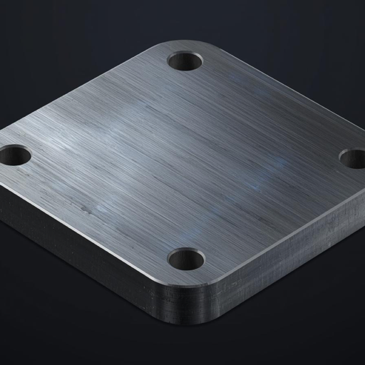
Published iOS, iPadOS, and Mac application
Created and published PlateOptimize, a downloadable application for designing optimized metal base plates.
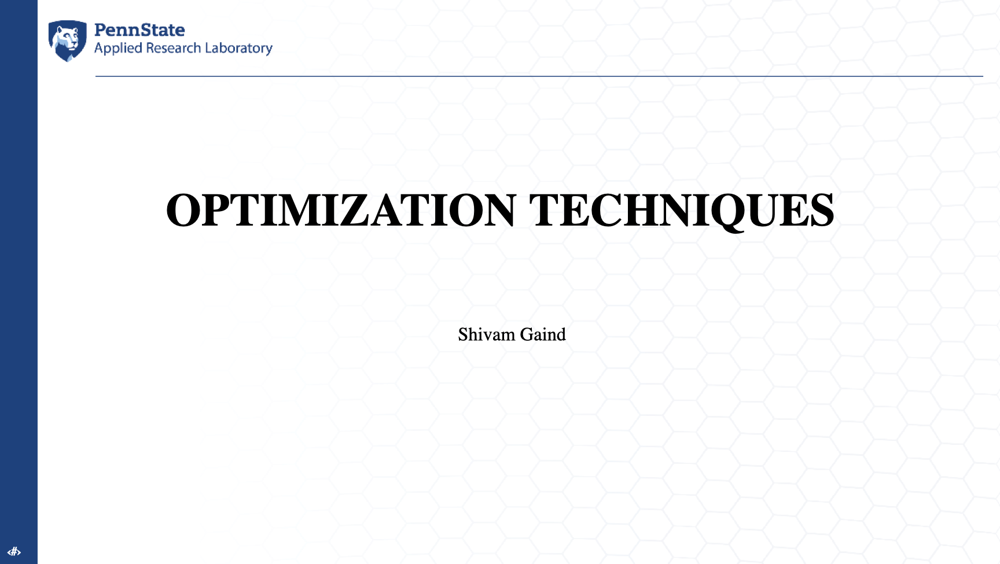
Research Assistant | Penn State Computational Electromagnetics and Antennas Research Laboratory
Extended topology optimization methods to thermal systems by minimizing thermal compliance and improving heat transfer.


Capstone Project
Built an insect detection device inspired by a Malaise trap, using controlled lighting, edge computing, and YOLOv8 models for insect classification.
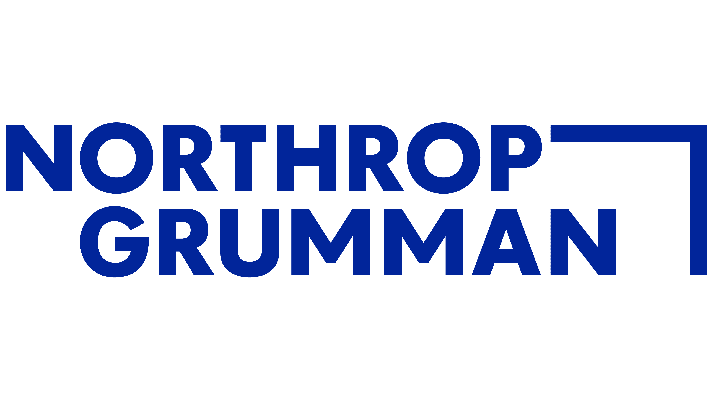
Manufacturing engineering internship
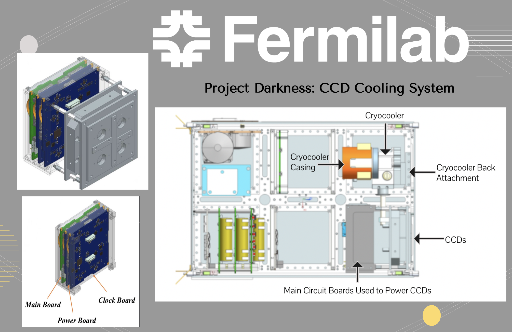
Thermal design
Designed a thermal system to transfer heat from key satellite circuits to a radiator for space-based detectors.
View PDF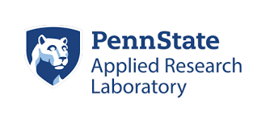
Additive manufacturing
Developed sampling-based algorithms to detect and quantify defects in metal AM builds.
View PDF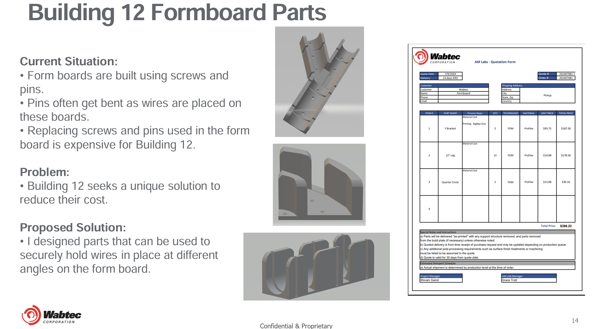
Manufacturing process
Developed a new wire-harnessing method replacing traditional formboards with stencils.
View PDF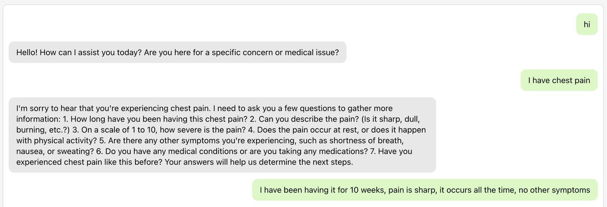
AI application
Built a React and Node.js intake tool that asks guided symptom follow-up questions and organizes patient responses for doctors.
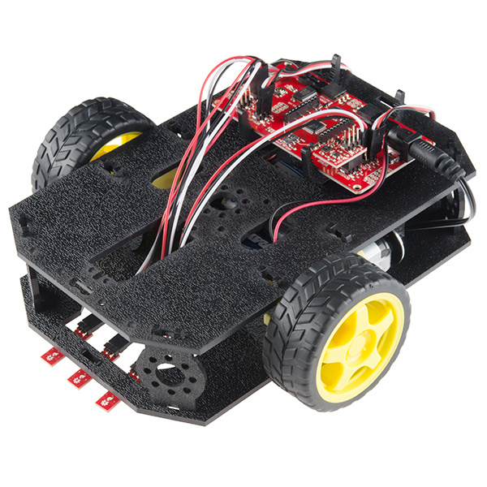
Controls
Implemented a proportional controller using IR sensing to maintain distance from walls.
View PDF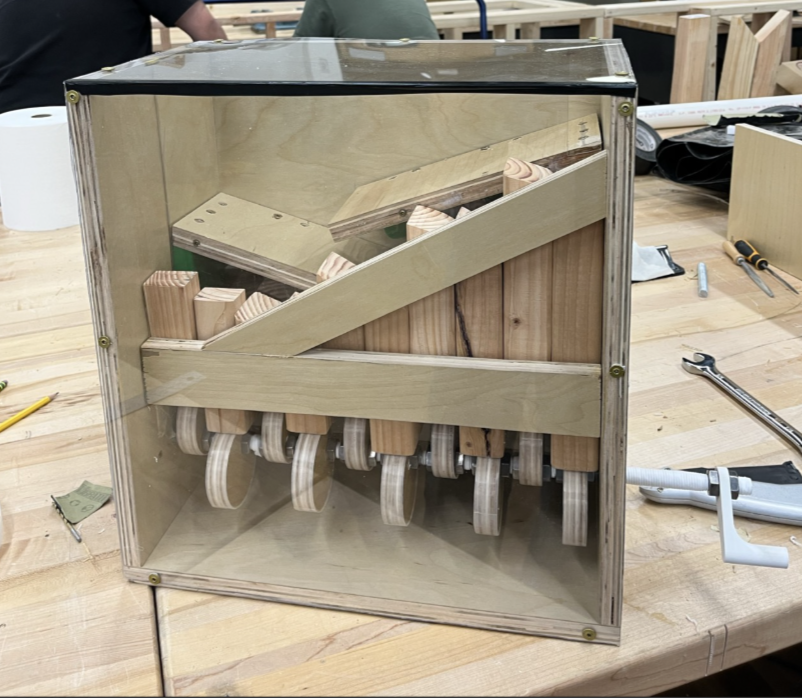
Mechanisms
Designed an interactive mechanical automaton exhibit to teach motion and linkages.
Watch Demo Video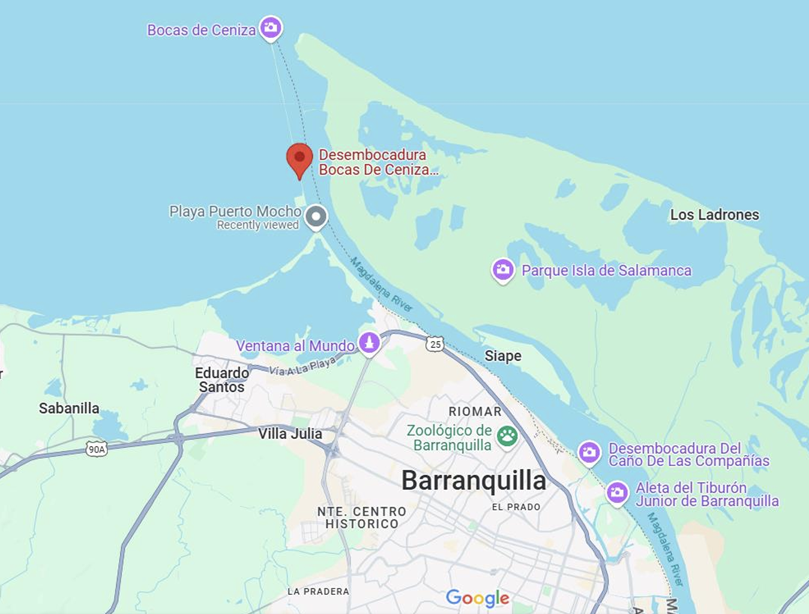
Sustainable energy
Designed and presented an off-grid energy and water system for a rural Colombian village.
View PDF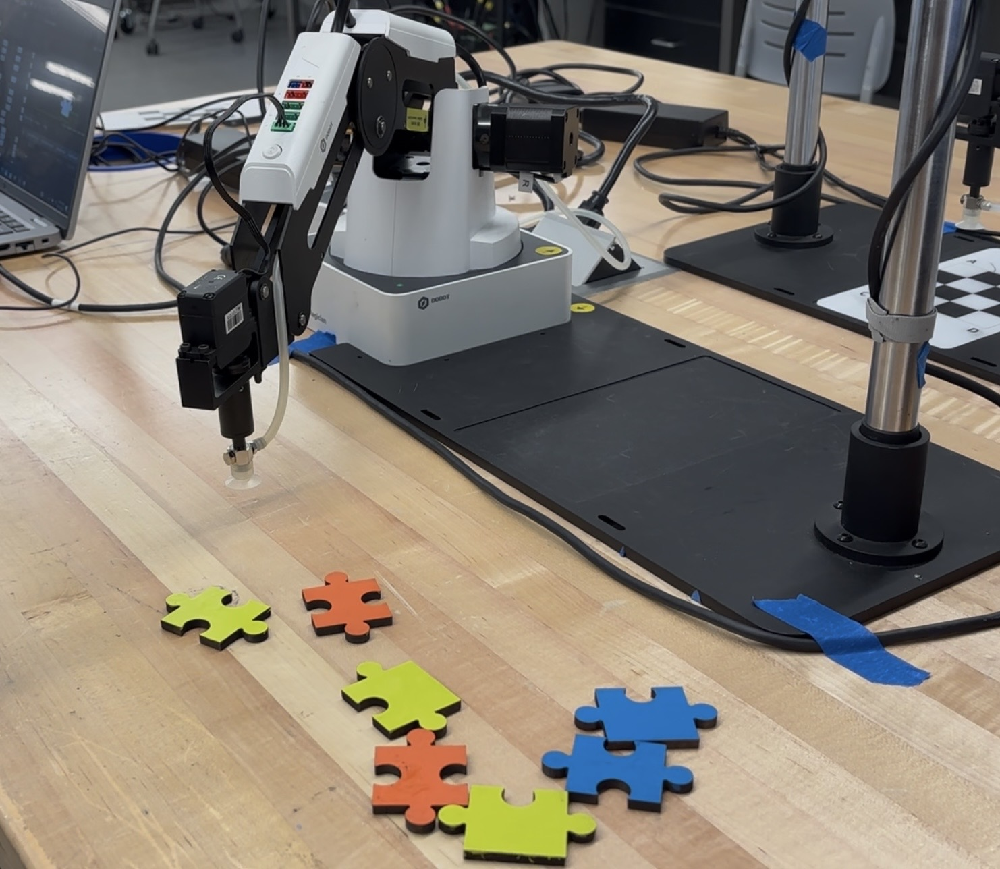
Vision robotics
Built a Dobot Vision Studio and C# robot workflow that classifies puzzle pieces by edge status and color, then sorts them into organized stacks.
Watch Demo Video